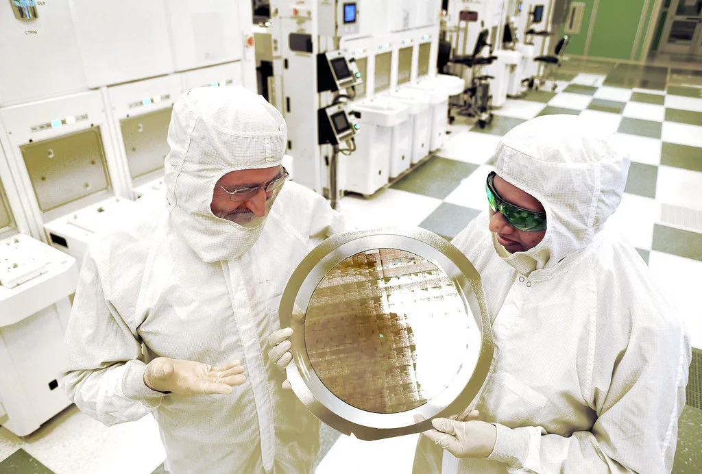

전날 6% 넘게 치솟으며 5,000선을 되찾았던 코스피가 하루 만에 급락세로 돌아섰다. 25일 코스피는 전 거래일보다 197.40포인트(3.94%) 내린 4,809.00에 문을 열었고, 개장 직후 낙폭을 더 키워 장중 한때 5% 넘게 밀렸다. 오전 9시 30분 무렵에는 4,760선까지 내려앉으며 전날 상승분 대부분을 되돌려줬다. 엔비디아 창업자 젠슨 황의 CEO 복귀가 불러온 이른바 '젠슨 황 효과'가 단 하루 만에 꺾인 셈이다.
한국거래소는 이날 오전 9시 8분 32초 유가증권시장에 매도 사이드카를 발동했다. 선물 가격이 급락할 때 프로그램 매도 호가의 효력을 5분간 멈춰 투매를 진정시키는 장치다. 전날에는 정반대로 매수 사이드카가 발동됐고, 23일에도 매도 사이드카가 나온 바 있다. 사흘 동안 매도와 매수 사이드카가 번갈아 등장한 것으로, 시장의 변동성이 그만큼 극단적으로 커졌다는 뜻이다.

급락의 직접적인 원인은 간밤 미국 반도체주의 폭락이다. 뉴욕증시에서 엔비디아와 마이크론 등 주요 반도체 종목이 크게 떨어졌고, 필라델피아 반도체지수는 하루 새 7.88% 주저앉았다. 그 충격은 고스란히 국내 반도체 대형주로 옮겨붙었다. 장 초반 삼성전자는 7%대, SK하이닉스도 7%대 하락률을 기록하며 지수 하락을 주도했다. 두 종목이 지수에서 차지하는 비중이 큰 만큼 코스피 전체가 함께 끌려 내려갔다.
수급도 하루 만에 뒤집혔다. 전날 6천억원 가까이 순매수하며 8거래일 만에 '사자'로 돌아섰던 외국인은 이날 오전 9시 20분께까지 4천억원대를 순매도하며 다시 매도 우위로 돌아섰다. 올해 들어 외국인의 유가증권시장 누적 순매도 규모가 250조원을 넘을 만큼 '셀 코리아' 흐름이 이어져 온 상황이어서, 전날의 매수 전환이 추세의 변화였는지에 대한 기대는 일단 힘을 잃었다.
시장이 다시 흔들린 배경에는 AI 산업을 둘러싼 근본적인 의구심이 자리하고 있다. 빅테크와 AI 기업들이 서로 투자하고 다시 그 돈으로 서로의 제품을 사들이는 이른바 'AI 순환금융' 논란, 대규모 데이터센터 투자로 하이퍼스케일러들의 잉여현금흐름이 나빠지고 있다는 지적, 2028년 이후 메모리 반도체가 공급과잉에 빠질 수 있다는 전망 등이 다시 부각됐다. CEO 복귀라는 단발성 호재만으로는 이런 구조적 우려를 덮기 어렵다는 점이 확인된 셈이다.

증권가의 시각은 엇갈린다. 기업들의 실적 전망에 비해 주가가 지나치게 많이 빠졌다며 저가 매수 기회로 봐야 한다는 의견이 있는 반면, AI 투자 사이클에 대한 신뢰가 회복되기 전까지는 미국 기술주 흐름에 따라 국내 증시가 계속 크게 출렁일 수밖에 없다는 신중론도 만만치 않다. 반도체 쏠림이 심한 국내 시장의 구조상 업황 전망이 바뀔 때마다 지수 전체가 과도하게 반응한다는 지적도 나온다.
이번 주 남은 변수로는 한국은행의 통화정책 결정이 꼽힌다. 한은은 26일 올해 마지막 금융통화위원회를 열고 기준금리를 결정하며, 시장에서는 인상 가능성을 높게 점치고 있다. 금리 결정과 함께 나올 경기·물가 전망이 외국인 자금 흐름에 영향을 줄 수 있다. 이날 최종 종가와 투자자별 매매 규모는 장 마감 뒤 확정되는 만큼, 하루에도 수 퍼센트씩 움직이는 장세에서 섣부른 추격 매매는 경계할 필요가 있다.